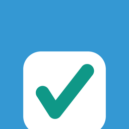

CheckItOff privacy policy
CheckItOff: Focus & Study. Made by PNW Making Things.
Effective November 21, 2026.
Privacy Policy
CheckItOff is a study and focus app made by PNW Making Things ("we"). It locks the apps you pick until your work is done, and keeps your checklists, flashcards, habits, to-dos, notes, voice memos and timers in one place. We don't collect, receive or store any of your information. There are no ads, no accounts and no analytics.
Your data
Your checklists, flashcard decks, habits, to-dos, notes, voice memos, timers, time you track, scores and settings are saved on your device. If iCloud is turned on for CheckItOff, they also sync through your own private iCloud account so they show up on your iPhone, iPad and Mac. That iCloud data belongs to you, and we can't see it. Deleting something removes it from all your devices. CheckItOff also keeps a daily backup file on your device or in your own iCloud Drive.
No accounts, no tracking
- CheckItOff has no sign-in and no accounts of its own.
- CheckItOff has no ads, no analytics and no tracking across other companies' apps and websites.
- We don't sell, rent or share your information, because we never have it.
Importing and flashcards
Text you paste, lists you type and files you import are read on your device. Nothing you import is uploaded to us or to anyone else.
Reminders and Calendar
If you choose to import from Apple Reminders or Calendar, iOS asks for permission first. CheckItOff reads only the lists or events you pick, on your device, to turn them into checklists or to-dos. It doesn't change or delete anything in Reminders or Calendar, and nothing it reads is sent to us or anyone else. You can turn this access off anytime in Settings → Privacy & Security.
Microphone and speech
The microphone is used only when you record a voice memo. Transcripts are made on your device with Apple's speech recognition. Recordings stay on your device and in your own iCloud.
Face ID
If you turn on Lock CheckItOff or Protect Your Data in Settings, the app asks iOS to check your Face ID, Touch ID or passcode. Apple does the check; CheckItOff never sees your face data or passcode.
Focus Lock and Screen Time
Focus Lock is optional and only locks what you turn it on for: a checklist, a step, a flashcard deck, a to-do, a habit, Focus Now or a schedule. When you set it up, iOS asks for Screen Time permission, and you choose the apps to block using Apple's own picker. Apple keeps that choice private: CheckItOff only gets a coded token, not the names of your apps or how you use them. The block runs on your device, and no Screen Time information ever leaves it.
If you add people to your accountability group, their names and phone numbers or emails are saved only on your device. If Screen Time access is turned off during a lock, the app offers to open Messages or Mail with a note for them; you choose whether to send it. If you use Parent Approval, Apple's Family Sharing handles the approval.
Notifications
If you allow notifications, CheckItOff schedules reminders on your device, such as due dates, Focus Lock alerts, habit reminders and timer alerts. We don't send these from a server.
Sharing
When you share a checklist or deck by AirDrop, Messages or another app, it goes straight from your device to the person or app you choose. It doesn't pass through us.
Purchases
CheckItOff Pro (Monthly or Yearly) is sold through Apple. Apple handles the payment and subscriptions, and we never see your card details or Apple Account information. The app only asks Apple whether your Apple Account has an active Pro plan.
Children
CheckItOff is a general study and productivity app. It isn't made only for children, and we don't collect personal information from anyone, including children. Parents can use Parent Approval so a child can't turn off CheckItOff's Screen Time access without them.
Changes
If this policy changes, we'll update the date at the top of this page.
Terms of Use
By using CheckItOff you agree to these terms and to Apple's standard Licensed Application End User License Agreement.
CheckItOff Pro
- CheckItOff is free to download. The free version includes 3 checklists, 1 flashcard deck, 3 habits, 10 notes, 3 voice memos, 3 timers, 1 Focus Lock at a time and 1 schedule. CheckItOff Pro makes everything unlimited and adds the focus timer, Lock Screen Live Activity, My Rewards and custom Focus Score rules, on all your devices.
- Pro comes in two plans: Monthly ($5.99 a month) and Yearly ($59.99 a year). Prices are in US dollars and may differ in other countries; the price in the app before you buy is the one you pay. Payment is charged to your Apple Account.
- Free trial: new Yearly subscribers get 14 days free. If you don't cancel at least 24 hours before the trial ends, the yearly price is charged when the trial ends.
- Auto-renewal: Monthly and Yearly subscriptions renew automatically at the same price unless you cancel at least 24 hours before the end of the current period. Your Apple Account is charged within 24 hours before the period ends.
- Cancel anytime: manage or cancel in your iPhone Settings → [your name] → Subscriptions, or from Settings → Manage Subscription in the app. Cancelling stops the next renewal; you keep Pro until the end of the period you paid for.
- Use Restore Purchase in Settings to unlock Pro on another device with the same Apple Account.
- Refunds are handled by Apple under its policies.
Focus Lock
Focus Lock is a tool to help you stay on task. You choose when it locks and which apps it blocks, and you can turn it off in the app. Calls and messages always stay available. Don't block apps you may need in an emergency.
No warranty
The app is provided "as is." To the extent the law allows, we aren't liable for lost data, missed deadlines or indirect damages from using the app.
Support
CheckItOff is made by PNW Making Things.
Questions, bugs or ideas: support@pnwmakingthings.com
- How do I make a checklist?
- On the Checklists tab, tap Paste or Import at the top. You'll see a preview of the steps. Fix anything you need, then tap Make Checklist. Or tap Type to write your own list like a note.
- My lists don't show up on my other devices.
- Make sure each device is signed in to the same Apple Account and iCloud is turned on for CheckItOff in Settings → [your name] → iCloud.
- Focus Lock didn't lock my apps.
- Make sure you allowed Screen Time access when asked and picked at least one app. You can check it in iPhone Settings → Screen Time.
- How do I unlock my apps?
- Finish what the lock is waiting for: every step on the checklist, your goal on the deck, or the to-do or habit. The apps unlock right away. In a pinch, open Focus and hold to unlock with a Master Key.
- How do I cancel my subscription?
- Go to iPhone Settings → [your name] → Subscriptions → CheckItOff, or tap Manage Subscription in the app's Settings. You keep Pro until the end of the period you paid for.
- I bought Pro but it's locked.
- Open Settings in the app, tap CheckItOff Pro, then Restore Purchase. Use the same Apple Account you bought it with.
Need help with CheckItOff?
Email support@pnwmakingthings.com and tell us what you were trying to do.